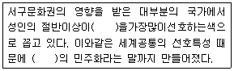
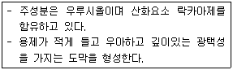
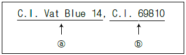

컬러리스트산업기사 (2017-05-07 기출문제)
1과목: 색채심리
1. 색채의 3속성과 심리효과가 틀린 것은?
- 색채의 한난감은 주로 색상에 의존한다.
- 색채의 경중감은 주로 명도에 의존한다.
- 어둡고 채도가 낮은 색채는 강하고 딱딱해 보인다.
- 난색은 촉촉한, 한색은 건조한 느낌을 준다.
(정답률: 71%)

2. 다음 ( )안에 들어갈 알맞은 단어는?

- 녹색
- 황색
- 청색
- 백색
(정답률: 80%)
3. 교통표지, 안전색채 등 국제적으로 공통적인 의미를 갖는 색채의 심리적 작용은?
- 감각
- 연상
- 상징
- 착시
(정답률: 63%)
4. 색채 연상에 대한 설명으로 틀린 것은?
- 심리적 활동의 영향으로 어떤 현상이나 이미지가 나타나는 것을 말한다.
- 개인적인 경험, 기억, 사상, 의견 등이 투영된다.
- 유채색은 연상이 강하게 나타난다.
- 빨강, 파랑, 노랑 등 원색과 선명한 톤일수록 연상 언어가 적다.
(정답률: 82%)
5. 색채 연상에 대한 설명으로 틀린 것은?
- 소비자의 생활에서 일관된 기호 이미지를 찾는다.
- 소비자가 지향하는 라이프스타일을 추출한다.
- 소비자가 선호하는 이미지를 유형별로 분류한다.
- 소비자의 생활 지역에 대한 객관적인 자료를 수집한다.
(정답률: 39%)
6. 색채선호 원리에 대한 설명으로 틀린 것은?
- 색의 선호도는 피부색과 눈동자와 연관성이 없다.
- 색의 선호도는 태양광의 양에 따라 다른 양상을 보인다.
- 색의 선호도는 교양과 소득에 따라 다르며 연령이 따라서도 변화한다.
- 색의 선호도는 성별, 민족, 지역에 따라 다른다.
(정답률: 70%)
7. 색채치료와 관련이 없는 것은?
- 괴테의 색채 심리 이론
- 그리스 헤로도토스의 태양광선치료법
- 아우렐리우스 켈수스의 컬러 밴드법
- 뉴턴의 색채론
(정답률: 67%)
8. 회사 간의 경쟁으로 인해 가격, 광고, 유치경쟁이 치열하게 일어나는 제품수명주기단계는?
- 도입기
- 성장기
- 성숙기
- 쇠퇴기
(정답률: 55%)
9. "같은 길이의 두 수직, 수평선이 교차하는 사각형은 물질성, 중력 그리고 날카로움의 한계를 상징한다."라고 색채와 모양간의 조화로운 관계를 언급한 사람은?
- 칸딘스킨
- 파버 비렌
- 요하네스 이텐
- 카스텔
(정답률: 49%)
10. 제품/사회, 문화 등 정보로서의 색채연상에 대한 사용방법으로 볼 수 없는 것은?
- 두 종류의 차 포장상자에 녹차는 초록색 포장지를, 대추차는 빨간색 포장지를 사용하여 포장하였다.
- 지하철 1호선은 빨간색, 2호선은 초록색으로 표시하였다.
- 선물을 빨간색 포장지와 분홍색 리본테이프로 포장하였다.
- 더운 물은 빨간색 손잡이를, 차가운 물은 파란색 손잡이를 설치하였다.
(정답률: 72%)
11. 부정적 연상으로 절망, 악마, 반항의 의미를 가지고 있으나 현대의 산업제품에는 세련된 색의 대표로 많이 활용되는 것은?
- 빨강
- 회색
- 보라
- 검정
(정답률: 74%)
12. 색채조절에 있어서 심리효과에 대한 설명 중 틀린것은?
- 색채의 감정적인 효과에 의해 한색계로 도색을 하면 심리적으로 시원하게 느껴진다.
- 큰 기계부위의 아래 부분은 어두운 색으로 하고 위 부분은 밝은 색으로 해야 안정감이 있다.
- 눈에 띄어야 할 부분은 한색으로 하여 안전을 도모한다.
- 고채도의 색은 화사하고, 저채도의 색은 수수하므로 이를 적절하게 이용한다.
(정답률: 82%)
13. 색채경험에 대한 설명 중 틀린 것은?
- 색채경험은 주위 환경에 따라 다르게 지각된다.
- 색채경험은 문화적 배경의 영향을 받는다.
- 색채경험은 객관적 현상으로 지역별 차이가 있다.
- 지역과 풍토는 색채경혐에 영향을 끼친다.
(정답률: 80%)
14. 색채의 추상적 자유연상법 가운데 연관관계가 가장 적합하지 않은 것은?
- 빨강 -광명, 활발, 명쾌
- 하양 -청결, 소박, 신성
- 파랑 -명상, 냉정, 심원
- 보라 -신비, 우아, 예술
(정답률: 68%)
15. 유행색의 속성에 대한 설명으로 옳은 것은?
- 일정 계절이나 기간 동안 특별히 많은 사람들이 선호하여 사용하는 색
- 특정한 사회적, 경제적인 사건에 많은 영향을 받지 않는 색
- 일정 기간만 나타나고 주기를 갖지 않은 색
- 패션, 자동차, 인테리어 분야에 동일하게 모두 적용되는 색
(정답률: 74%)
16. 색채연상 중 제품 정보로서의 색을 사용한 예로 옳은 것은?
- 밀크 초콜릿의 포장지를 하양과 초콜릿색으로 구성하였다.
- 녹색은 구급장비, 상비약의 상징에 사용된다.
- 노란색은 장애물에 대한 경고를 나타낸다.
- 시원한 청량음료에 난색계열의 색채를 사용하였다.
(정답률: 72%)
17. 색채 마케팅에 관련된 설명 중 옳은 것은?
- 색채를 이용하여 소비자의 심리를 읽고 표현하는 분야로 인구통계학적 자료와 경제적 환경변화로 인한 영향을 많이 받는다.
- 경기가 둔화되면 다양한 색상과 톤의 색채를 띤 제품을 선호하는 경향이 있다.
- 기업의 색채 마케팅 전략은 소비자 계층에 대한 정확한 파악 시 직관적이고 경험주의적 성향을 중요시한다.
- 색채 마케팅의 궁극적 목표는 다양한 색채를 이용한 제품의 차별화를 추구함에 있다.
(정답률: 48%)
18. 선호색채를 구분하는 변인을 설명한 것 중 잘못된 것은?
- 동일한 제품이라 할지라도 남성과 여성의 선호경향은 다를수 있다.
- 제품의 특성에 따라 선호되는 색채는 일반적으로 고정되어 있어 새로운 재료의 개발이나 유행이 제품의 특성에 영향을 미치지 않는다.
- 동양과 아프리카 등지에서는 서양식의 일반색채원리가 적용되지 않는 경우가 있다.
- 성별의 차이는 색상의 선호도에 영향을 미친다.
(정답률: 80%)
19. 다음 중 각 문화권별로 서로 다른 상징으로 인식되는 색채선호의 예가 나머지 셋과 다른 하나는?
- 서양의 흰색 웨딩드레스 -한국의 소복
- 중국의 붉은 명절 장식 -서양의 붉은 십자가
- 태국의 황금사원 -중국황제의 금색복식
- 마국의 청바지 -성화 속 성모마리아의 청색
(정답률: 50%)
20. 능률을높일 수있는 사무실벽의 색채로가장 적합한 것은?
- 하양
- 연녹색
- 노란색
- 회색
(정답률: 64%)
2과목: 색채디자인
21. 바우하우스에 대한 설명으로 틀린 것은?
- 바이마르의 바우하우스 기초조형교육의 중심적인 인물은 이텐(Itten, Johannes)이다.
- 다품종소량생산과 단순하고 합리적인 양식 등 디자인의 근대화를 추구한다.
- 예술창작과 공학 기술의 통합을 주장한 새로운 교육기관이며 연구소이다.
- 현대건축, 회화, 조각, 디자인 운동에 영향을 주었다.
(정답률: 60%)
22. 제1차 세계 대전을 전후로 러시아에서 일어난 조형 운동으로서 산업주의와 집단주의에 입각한 사회성을 추구하였으며, 입체파나 미래파의 기계적 개념과 추상적 조형을 주요 원리로 삼아 일어나 조형 운동은?
- 구성주의
- 구조주의
- 미래주의
- 기능주의
(정답률: 56%)
23. 디자인(design)의 어원으로 거리가 먼 것은?
- 데생(dessein)
- 디스크라이브(describe)
- 디세뇨오(disegno)
- 데지그나레(designare)
(정답률: 72%)
24. 색채계획과 색채조절의 효과로 공통점이 아닌 것은?
- 작업 능률을 향상시킨다.
- 피로도를 경감시킨다.
- 예술성이 극대화 된다.
- 유지관리 비용이 절감된다.
(정답률: 52%)
25. 다음 중 디자인 과정(Design process)을 적절하게 나열한 것은?
- 계획-조사분석 -전개-결정
- 조사분석-계획 -전개-결정
- 계획 -전개-조사분석 -결정
- 조사분석 -전개-계획 -결정
(정답률: 62%)
26. 다음 중 제품수명 주기가 가장 짧은 품목은?
- 자동차
- 셔츠
- 볼펜
- 냉장고
(정답률: 51%)
27. 빅터 파파넥(Victor Papanek)이 말한 '복합기능(Function complex)'이란 디자인 목적 중 "특수 목적을 달성하기 위한 자연과 사회의 변천작용에 대한 계획적이고 의도적인 이용"에 해당하는 기능적 용어는?
- 미학(Aesthetics)
- 텔레시스(Telesis)
- 연상(Association)
- 용도(Use)
(정답률: 54%)
28. 디자인의 역할 중에서 커뮤니케이션이 중심이 되고 심벌과 기호를 통해 정보를 전달하는 분야는?
- 제품디자인
- 시각디자인
- 평면디자인
- 환경디자인
(정답률: 81%)
29. 사물, 행동, 과정, 개념 등을 나타내는 상징적 그림으로 오늘날 국제적인 스포츠 행사나 공항, 역에서 문자를 대신하는 그래픽 심벌은?
- CI(Corporate Identity)
- 픽토그램(Pictogram)
- 시그니처(Signature)
- BI(Brand Identity)
(정답률: 77%)
30. 색채계획의 역할 중 가장 거리가 먼 것은?
- 심리적 안정감 부여
- 효과적인 차별화
- 제품 이미지 상승효과
- 제품의 가격 조정
(정답률: 81%)
31. 제품의 색채를 통일시켜 대량생산하는 것과 가장 관계가 깊은 디자인 조건은?
- 심미성
- 경제성
- 독창성
- 합목적성
(정답률: 72%)
32. 다음 중 디자인(design)이 개념과 거리가 먼 것은?
- 디자인 분야에는 시각디자인, 산업디자인, 의상디자인, 환경디자인 등 매우 다양한 분야가 있다.
- 사물의 재료나 구조, 기능은 물론 아름다움이나 조화를 고려하여 사물의 형태, 형식들을 한데 묶어내는 종합적 계획 설계를 말한다.
- 미술은 작가 중심이라고 한다면 디자인은 사용자, 소비자 중심이라고 말할 수 있다.
- 디자인은 반드시 경제성을 배제할 수 없기에 경제적 여유로움이 없으면 그만큼 디자인의 혜택을 누릴 수 없다.
(정답률: 77%)
33. 색채 계획의 과정에서 현장, 측색조사는 어느 단계에서 요구되는가?
- 조사기획 단계
- 색채계획 단계
- 색채관리 단계
- 색채디자인 단계
(정답률: 52%)
34. 디자인 프로세스의 대표적인 3단계에 속하지 않는 것은?
- 디자인 문제에 대한 이해단계 : 목표와 제한점, 요구사항 파악, 문제 요소간 상호관련 분석 등
- 해결안의 종합단계 : 상상력, 창조기법, 해결안, 디자인안 제시
- 해결안의 평가단계 : 아이디어의 확증, 의사결정의 실천, 해결안의 이해, 발전, 결정
- 마케팅 전략 수립단계 : 소비자 행동 요인 파악, 소비시장 분석, 세분화, 시장선정
(정답률: 40%)
35. 형태와 기능의 관계에 대해 "형태는 기능을 따른다"라고 말한 사람은?
- 윌터 그로피우스
- 루이스 설리반
- 필립 존슨
- 프랑크 라이트
(정답률: 76%)
36. 디자인의 분류 중 인간 생활을 들러싸고 있는 복합적인 환경을 보다 정돈되고 쾌적하게 창출해 나가는 디자인은?
- 인테리어
- 환경디자인
- 시각디자인
- 건축디자인
(정답률: 84%)
37. 색채계획은 규모와 장소에 따라 내용이 달라지기도 하나 변함없이 필요로 하는 4가지 조건이 있다. 이 조건과 거리가 먼 것은?
- 개성 표현
- 유행 표현
- 정보 제공
- 감성 자극
(정답률: 39%)
38. 유사, 대비, 균일, 강화와 관련 있는 디자인의 조형 원리는?
- 통일
- 조화
- 균형
- 리듬
(정답률: 58%)
39. 디자인 사조와 특징이 옳게 연결된 것은?
- 큐비즘 -세잔이 주도한 순수 사실주의를 말함
- 아르누보 -1925년 파리 박람회에서 유래된 것으로 기하학적인 문양이 특색
- 바우하우스 -1919년 윌터 그로피우스에 의해 설립된 조형학교
- 독일공작연맹 -윌리엄 모리스와 반데벨데의 주도로 결성된 조형 그룹
(정답률: 65%)
40. 대상을 연속적으로 전개시켜 이미지를 만드는 디자인 조형원리는?
- 기능성
- 심미성
- 창조성
- 윤리성
(정답률: 46%)
3과목: 섹채관리
41. 컴퓨터 장치를 이용해서 정밀측색하여 자동으로 구성된 컬러런트를 정밀한 비율로 자동조절 공급함으로서, 색을 자동화하여 조색하는 시스템을 무엇이라 하는가?
- CRT
- CCD
- CIE
- CCM
(정답률: 75%)
42. 안료 입자의 크기에 대한 설명이 틀린 것은?
- 안료 입자의 크기에 따라 굴절율이 변한다.
- 안료 입자의 크기가 클수록 전체 표면적이 작아지는 반면 빛은더 잘반사한다.
- 안료 입자의 크기는 도료의 점도에 영향을 미친다.
- 안료 입자의 크기는 도료의 불툴명도에 영향을 미친다.
(정답률: 63%)
43. 연색지수에 대한 설명으로 틀린 것은?
- 연색지수는 기준광고 시험광원을 비교하여 색온도를 재현하는 정도를 나타내는 지수이다.
- 연색 지수를 구하기 위해 사용되는 시험색은 스펙트럼 반사율을 아는 물체색이다.
- 연색지수 100은 시험광원이 기준광 하에서 동일한 물체색을 재현하는 것을 의미한다.
- 광원의 연색성을 나타내는 것을 목적으로 한 지수이다.
(정답률: 39%)
44. 다음에서 설명하는 특징을 가진 도료는?

- 천연수지 도료 -캐슈계 도료
- 수성도료 -아교
- 천연수지 도료 -옻
- 기타도료 -주정도료
(정답률: 53%)
45. 다음 중 측색 결과로 얻게 되는 데이터에 대한 설명으로 틀린 것은?
- CIEXYZ : CIE 삼자극치
- CIEYxy : CIE 1931 색좌표 x, y와 시감반사율 Y
- CIE1976 L*a*b* : 균등색공간에서 표현되는 측색 데이터
- CIE L*C*h* : L*은 명도, C*는 채도, h*는 파장
(정답률: 60%)
46. 관측자의 색채 적용조건이나 조명, 배경색의 영향에 따라 변화하는 색이 보이는 결과를 무엇이라고 하는가?
- ICM File 현상
- 색영역 맵핑 현상
- 디바이스의 특성화
- 컬러 어피어런스
(정답률: 65%)
47. 분광반사율이 다르지만 같은 색자극을 일으키는 현상은?
- 아이소머리즘(isomerism)
- 메터메리즘(metamerism)
- 컬러 어피어런스(color appearance)
- 푸르킨예 현상(Purkinje phenomenon)
(정답률: 45%)
48. KS A 0062에 의한 색체계와 관련된 것은?
- HV / C
- L*a*b*
- DIN
- PCCS
(정답률: 59%)
49. 육안 조색 시 광원을 가장 중요시해야하는 이유는?
- 동화효과
- 연색성
- 색순응
- 메타메리즘
(정답률: 44%)
50. 최초의 합성염료로서 아닐린 설페이트를 산화시켜서 얻어내며 보라색 염료에 쓰이는 것은?
- 산화철
- 모베인(모브)
- 산화망간
- 옥소크롬
(정답률: 70%)
51. 육안검색과 측색기 측정에 대한 설명으로 틀린것은?
- 육안검색 시 감성적인 판단이 이루어질 수 있다.
- 측색기는 동일 샘플에 대해 거의 일정한 측색값을 낸다.
- 육안검색은 관찰자의 차이가 없다.
- 필터식 색채계와 분광계의 측색값은 서로 다를 수있다.
(정답률: 77%)
52. 컬러런트(Colorant) 선택 시 고려되어야 할 조건과 거리가 먼 것은?
- 착색비용
- 다양한 광원에서 색채 현시에 대한 고려
- 착색의 견뢰성
- 기준광원 설정
(정답률: 34%)
53. 디지털 CMS에서 프로파일을 이용하여 컬러를 관리할 때 틀린 설명은?
- RGB 컬러 이미지를 프린터 프로파일로 변환하면 원고의 RGB 색 데이터가 변환되어 출력된다.
- RGB 이미지에 CMYK 프로파일으 대입할 수 없다.
- RGB, CMYK, L*a*b* 이미지들은 상호 간 어떤 모드로도 변환 가능하다.
- 입력프로파일은 출력프로파일과 동일하게 적용된다.
(정답률: 46%)
54. 반사물체의 측정 방법 중 정반사 성분이 완벽히 제거되는 배치는?
- 확산/확산 배열(d:d)
- 확산: 0도 배열(d:0)
- 45도 환상/수직(45a:0)
- 수직/45도(0:45x)
(정답률: 59%)
55. 컬러 프린터 잉크로 사용하는 기본 원색들은?
- Red, Green, Blue
- Cyan, Magenta, Yellow
- Red, Yellow, Blue
- Cyan, Magenta, Red
(정답률: 79%)
56. 다음 중 산업현장에서의 색차 평가를 바탕으로 인지적인 색차의 명도, 채도, 색상 의존성과 색상과 채도의 상호간섭을 통한 색상 의존도를 평가하여 발전시킨 색차식은?
- △E*ab
- △E*uv
- △E*oo
- △E*AN
(정답률: 24%)
57. 아래의 컬러 인덱스 구조에 대한 설명으로 옳은 것은?

- ⓐ : 색료 사용 용도에 따른 분류
ⓑ : 화학적인 구조가 주어지는 물질 번호 - ⓐ : 색료 사용 용도에 따른 분류
ⓑ :제조사 등록 - ⓐ : 색역에 따른 분류
ⓑ : 판매업체 분류 번호 - ⓐ : 착색의 견뢰성에 따른 분류
ⓑ : 광원에서의 색채 현시 분류 번호
(정답률: 57%)
58. 시감도와 눈의 순응과 관련한 용어의 설명이 틀린 것은?
- 간상체 : 망막의 시세포의 일종으로, 주로 어두운 곳에서 활성화되고 명암감각에만 관계되는 것
- 추상체 : 망막의 시세포의 일종으로, 밝은 곳에서 활성화되고 색각 및 시력에 관계된는 것
- 명소시 : 명순응 상태에서 시각계가 시야의 색에 적응하는 과정 및 생태
- 박명시 : 명소시와 암소시의 중간 밝기에서 추상체와 간상체 양쪽이 활성화되고 있는 시각의 상태
(정답률: 48%)
59. 아날로그 이미지를 디지털 파일과 변화시켜 주는 장비는?
- 포스트스크립트
- 모션캡쳐
- 라이트 펜
- 스캐너
(정답률: 79%)
60. 인간의 색채식별력을 감안하여 가장 많은 컬러를 재현할 수 있는 비트 체계는?
- 24비트
- 32비트
- 채널당 8비트
- 채널당 16비트
(정답률: 52%)
4과목: 색채지각의이해
61. 색채의 감정 효과에 대한 설명으로 틀린 것은?
- 색의 중량감은 색상에 따라 가장 크게 좌우된다.
- 작업능률과 관계있는 것은 색채조절로, 색의 여러 가지 감정효과 등이 연괸되어 있다.
- 녹색, 보라색은 따뜻함이나 차가움을 느끼지 않는 중성색이다.
- 채도가 낮은 색은 부드러운 느낌을 준다.
(정답률: 61%)
62. 어느 색을 검은 바탕 위에 놓았을 때 밝게 보이고, 흰 바탕 위에 놓았을 때 어둡게 보이는 것과 관련된 현상은?
- 동시 대비
- 명도 대비
- 색상 대비
- 채도 대비
(정답률: 75%)
63. 헤링의 색채 대립과정 이론에 의하면 노랑에 대립적으로 부호화되는 색은?
- 녹색
- 빨강
- 파랑
- 보라
(정답률: 71%)
64. 파란하늘, 노란튤립과 같이 색을 지각할 수 있는 광수용기는?
- 간상체
- 수정체
- 유리체
- 추상체
(정답률: 74%)
65. 혼합하면 무채색이 되는 두가지색은 서로 어떤 관계인가?
- 반대색
- 보색
- 유사색
- 인근색
(정답률: 82%)
66. 작은 면적의 회색을 채도가 높은 유채색으로 회색이 유채색의 보색 색조를 띠어 보이는 현상은?
- 푸르킨예현상
- 저드효과
- 색음현상
- 브뤼케현상
(정답률: 60%)
67. 빛의 혼합 결과로 옳은 것은?
- 녹색 + 마젠타 = 노랑
- 파랑 + 녹색 = 시안
- 파랑 + 노랑 = 녹색
- 마젠타 + 파랑 = 보라
(정답률: 71%)
68. 분광반사율의 분포가 서로 다른 두 개의 색자극이 광원의 종류와 관찰자 등의 관찰조건을 일정하게 할 때에만 같은 색으로 보이는 경우는?
- 무조건등색
- 아이소메리즘
- 메타메리즘
- 현상색
(정답률: 54%)
69. 백색광을 노란색 필터에 통과시킬 때 통과되지 않는 파장은?
- 장파장
- 중파장
- 단파장
- 적외선
(정답률: 49%)
70. 다음 중 가장 온도감이 높게 느껴지는 색은?
- 보라
- 노랑
- 파랑
- 빨강
(정답률: 84%)
71. 동시대비에 관한 설명 중 잘못된 것은?
- 두 색의 차이가 클수록 대비효과가 강해진다.
- 색 자극 사이의 거리가 멀수록 대비효과가 약해진다.
- 배경색의 크기가 일정할 때 샘플색의 크기가 클수록 대비효과가 커진다.
- 두 색의 인접부분에서 대비효과가 특별히 강조된다.
(정답률: 45%)
72. 색의 진출과 후퇴 효과에 대한 설명으로 옳은 것은?
- 단파장의 색은 장파장의 색보다 후퇴되어 보인다.
- 고명도의 색은 저명도의 색보다 후퇴되어 보인다.
- 난색은 한색보다 후퇴되어 보인다.
- 저채도의 색은 고채도의 색보다 진출되어 보인다.
(정답률: 84%)
73. 색상대비에 대한 설명이 옳은 것은?
- 빨강 위의 주황색은 노란색에 가까워 보인다.
- 색상대비가 일어나면 배경색의 유사색으로 보인다.
- 어두운 부부의 경계는 더 어둡게, 밝은 부분의 경계는 더 밝게 보인다.
- 검정색 위의 노랑은 명도가 더 높아 보인다.
(정답률: 60%)
74. 영,헬름흘츠의 색각 이론에 관한 설명 중 옳은 것은?
- 흰색, 검정, 노랑, 파랑, 녹색의 반대되는 3대 반응 과정을 일으키는 수용기가 존재한다는 이론이다.
- 빨강, 노랑, 녹색, 파랑의 4색을 포함하기 때문에 4원색설이라고 한다.
- 흰색, 회색, 검정 또는 흰색, 노랑, 검정을 근원적인 색으로 한다.
- 빨강, 녹색, 파랑을 느끼는 색각 세포의 혼합으로 모든 색을 감지할 수 있다는 3원색설이다.
(정답률: 67%)
75. 색의 조화와 대비의 법칙을 발표하여 동시대비의 원리를 발견한 사람은?
- 문, 스펜서(Moon & Spenser)
- 오스트발트(Friedrich Wilhelm Ostwald)
- 파버 비렌(Faber Biren)
- 슈브뢸(M.E Chevreul)
(정답률: 46%)
76. 빛의 성질과 그 예가 옳은 것은?
- 산란 : 파란하늘, 노을
- 굴절 : 부처님의 후광, 브로켄의 요괴
- 회절 : 콤펙트디스크, 비눗방울
- 간섭 : 무지개, 렌즈, 프리즘
(정답률: 69%)
77. 인간의 볼 수 있는 가시광선의 파장 범위는 대략 얼마인가?
- 약 280 ~ 790mm
- 약 380 ~ 780nm
- 약 390 ~ 860nm
- 약 400 ~ 700nm
(정답률: 84%)
78. 다음 중 심리적으로 가장 침정되는 느낌을 주는 색의 특성을 모은 것은?
- 난색 계열의 고채도
- 난색 계열의 저채도
- 한색 계열의 고채도
- 한색 계열의 저채도
(정답률: 71%)
79. 빨간색을 한참 본후에 황색을 보면 그황색은 녹색 기미를 띤다. 이와 같은 현상은?
- 연변대비
- 계시대비
- 동시대비
- 색상대비
(정답률: 80%)
80. 붉은 사과를 보았을 때 지각되는 빛의 파장으로 가장 근접한 것은?
- 300nm.400nm
- 400nm.500nm
- 500nm.600nm
- 600nm.700nm
(정답률: 72%)
5과목: 색채체계의이해
81. NCS 색체계에 대한 설명으로 옳은 것은?
- 늬앙스는 색채 서술에 관한 용어이다.
- 색채표기는 검정색도 -유채색도 -색상의 순으로 한다.
- 색체계의 기본은 영, 헬름흘츠의 원색설에서 출발한다.
- 색채표기에서 "S"는 Saturation(채도)을 나타낸다.
(정답률: 36%)
82. 색명에 관한 설명 중 틀린 것은?
- 색이름은 색채의 이름과 색을 전달하고 색이름을 통해 감성이 함께 전달된다.
- 계통색이름은 모든 색을 계통적으로 분류해서 표현할 수 있도록 한 색이름 체계이다.
- 한국산업표준에서 사용하는 유채색의 수식형용사는 soft를 비롯하여 5가지가 있다.
- 관용색이름이 다른 명칭과 혼동되기 쉬울때에는 '색'을 붙여 읽는 것이 바람직하다.
(정답률: 58%)
83. NCS색체계의 색 표기방법인 S4030-B20G에 대한 설명으로 옳은 것은?
- 40%의 하양색도
- 30%의 검정색도
- 20%의 녹색도를 지닌 파란색
- 20%의 파란색도를 지닌 녹색
(정답률: 73%)
84. 한국산업표준(KS)에 규정된 유채색의 기본색 이름 전부의 약호가 옳게 나열된 것은?
- R, YR, Y, GY, G, BG, B, PB, P, RP, Pk, Br
- R, O, Y, YG, G, BG, B, bV, P, rP, Pk, Br
- R, yR, Y, gY, G, bG, B, pB, P, rP
- R, Y, G, B, P
(정답률: 68%)
85. 먼셀 색체계의 특징에 관한 설명 중 옳은 것은?
- 색각이론 중 헤링의 반대색설을 기본으로 하여 24색상환을 사용하였다.
- 19⑤년 미국의 화가이자 색채연구가인 먼셀이 측색을 통해 최초로 정량적 표준화를 시도한 것이다.
- 새로운 안료의 개발 등으로 인한 표준색의 범위확장을 허용하는 색나무(color tree) 개념을 가지고 있다.
- 채도는 중심의 무채색 축을 0으로 하고 수평방향으로 10단계로 구성하여 그 끝에 스펙트럼 상의 순색을 위치시켰다.
(정답률: 43%)
86. 한국인의 백색에 관한 설명으로 옳은 것은?
- 순백, 수백, 선백 등 혼색이 전혀 없는, 조작하지 않은 있는 그대로의 색이라는 의미다.
- 배색은 소복에만 사용하였다.
- 위엄을 표하는 관료들의 복식색 이었다.
- 유백, 난백, 회백 등은 전통개념의 백색에 포함되지 않는다.
(정답률: 70%)
87. 오스트발트 색체계를 기본으로 해서 측색학적으로 실용화되고, 독일공업규격에 제정된 색체계는?
- DIN
- JIS
- DIC
- Pantone
(정답률: 75%)
88. 오스트발트 색체계에 대한 설명 중 틀린 것은?
- 헤링의 4원색 이론을 기본으로 한다.
- 색상환의 기준색은 red, yellow, ultramarine, blue,sea green 이다.
- 정3각형의 꼭지점에 순색, 회색, 검정을 배치한 3각 좌표를 만들었다.
- 색상표시는 숫자와 알파벳 기호로 나타낸다.
(정답률: 53%)
89. 현색계에 속하지 않는 색체계는?
- 먼셀 색체계
- NCS 색체계
- XYZ 색체계
- DIN 색체계
(정답률: 59%)
90. 먼셀 색체계는 색의 어떠한 속성을 바탕으로 체계화한 것인가?
- 색상, 명도, 채도
- 백색량, 흑색량, 순색량
- 백색도, 검정색도, 유채색도
- 명색조, 암색조, 톤
(정답률: 82%)
91. 오스트발트 조화론의 기본 개념은?
- 대비
- 질서
- 자연
- 감성
(정답률: 61%)
92. 배색의 예와 효과가 바르게 연결된 것은?
- 선명한 색의 배색 -동적인 이미지
- 차분한 색의 배색 -동적인 이미지
- 색상의 대비가 강한 배색 -정적인 이미지
- 유사한 색상의 배색 -동적인 이미지
(정답률: 63%)
93. Yxy 색체계에 대한 설명이 옳은 것은?
- 빛에 의해 일어나는 3원색(R,G,B)을 정하고 그 혼색비율에 의한 색체계이다.
- 수학적 변환에 의해 도입된 가상적 원자극을 이용해서 표색을 하고 있다.
- 색도도의 중심점은 백색점을 표시하고, Y는 명도이고 x,y는 색도를 나타낸다.
- 감법혼색의 실험결과로 만들어진 국제표준체계이다.
(정답률: 58%)
94. ISCC-NIST 색명법의 표기방법 중 영역부분에 대한 설명으로 틀린 것은?
- 명도가 높은 것은 light, very light 로 구분한다.
- 채도가 높은 것은 strong, vivid로 구분한다.
- 명도와 채도가 함께 높은 부분을 brilliant로 구분한다.
- 명도는 낮고 채도가 높은 부분을 dark로 구분한다.
(정답률: 50%)
95. CIELAB 색체계에 대한 설명으로 옳은 것은?
- a* 값이 + 이면 파란빛이 강해진다.
- a* 값이 -이면 붉은빛이 강해진다.
- b* 값이 + 이면 노란빛이 강해진다.
- b* 값이 -이면 초록빛이 강해진다.
(정답률: 72%)
96. 저드(D.M.Judd)의 색채조화론과 관련이 없는 설명은?
- 규칙적으로 선정된 명도, 채도, 색상 등 색채의 요소가 일정하면 조화된다.
- 자연계와 같이 사람들에게 잘 알려진 색은 조화된다.
- 어떤 색도 공통성이 있으면 조화된다.
- 전체적으로 하나의 주된 색의 배색은 조화된다.
(정답률: 38%)
97. 먼셀의 색채표시법 기호로 옳은 것은?
- H C/V
- H V/C
- V H/C
- C V/H
(정답률: 76%)
98. PCCS 색체계의 주요 4색상이 아닌 것은?
- 빨강
- 노랑
- 파랑
- 보라
(정답률: 75%)
99. 현색계에 대한 설명이 틀린 것은?
- 색지각에 따라 분류되는 체계를 말한다.
- 조색, 검사 등에 적합한 오차를 적용할 수 있다.
- 조건등색과 광원의 영향을 많이 받는다.
- 형광색이나 고채도 염료의 경우 판단이 어렵다.
(정답률: 37%)
100. 톤(tone)을 위주로 한 배색이 주는 느낌 중 틀린 것은?
- light tone : 즐거운, 밝은, 맑은
- deep tone : 눈에 띄는, 선명한, 진한
- soft tone : 어렴풋한, 부드러운, 온화한
- grayish tone : 쓸쓸한, 칙칙한, 낡은
(정답률: 72%)